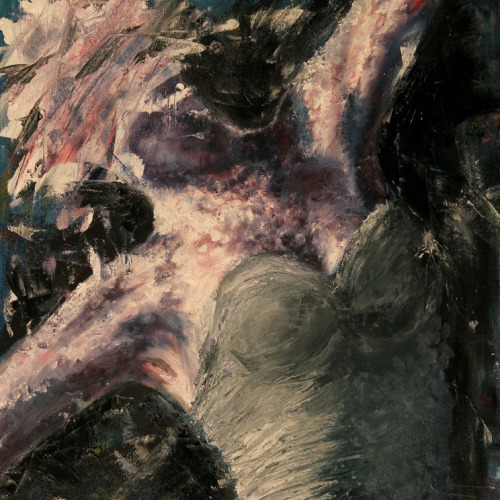
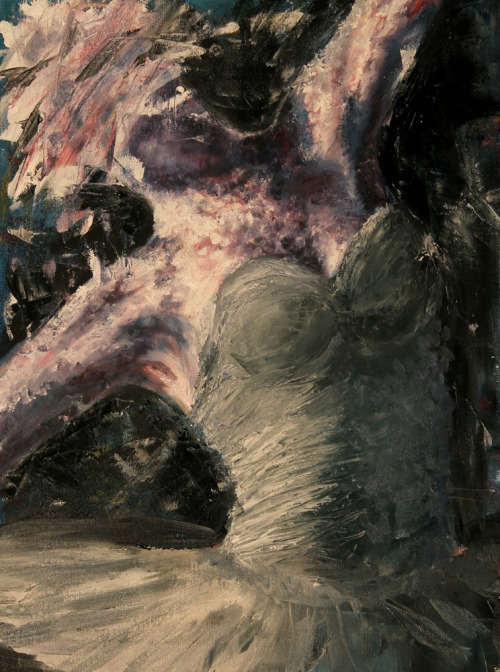
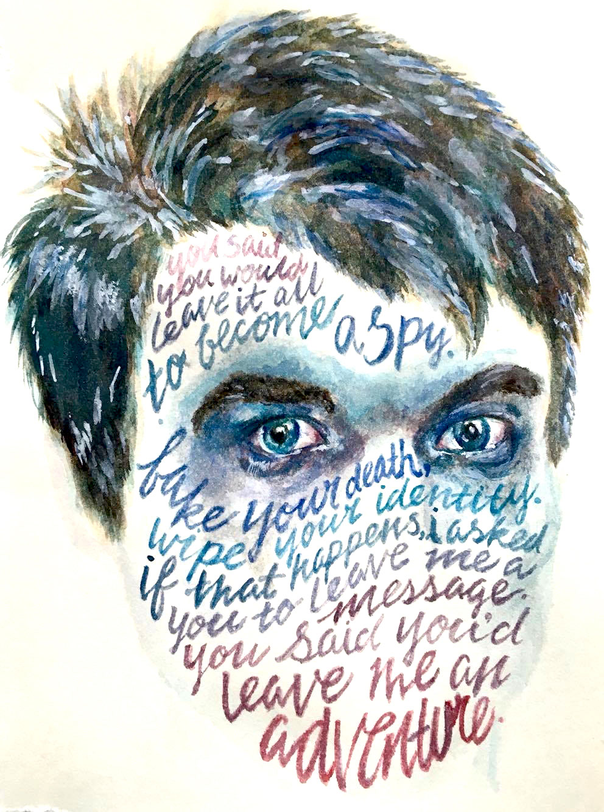
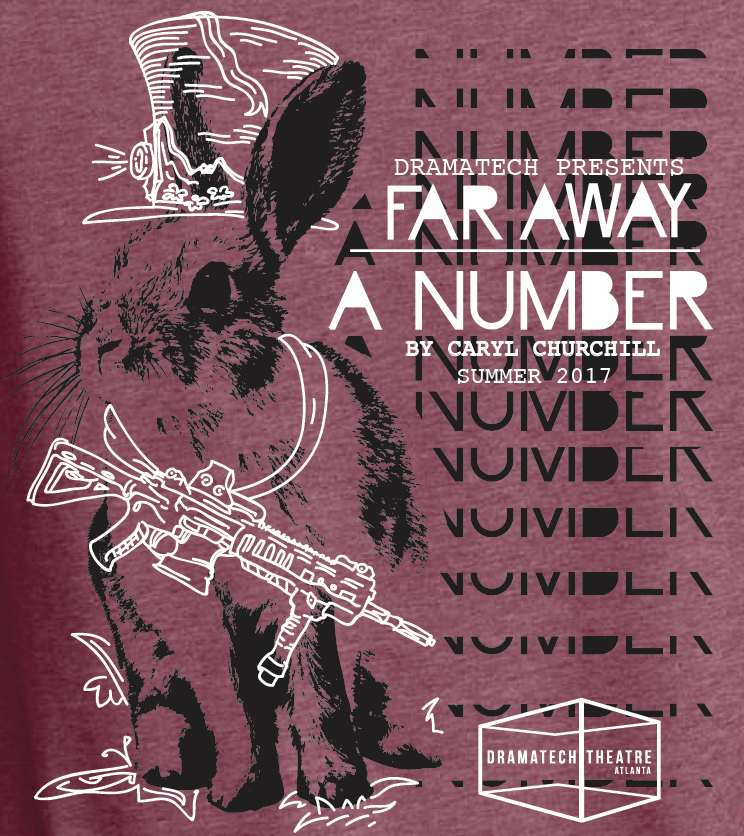

Putnam Poster Design
Putnam County Poster Design

This work was created in 2016 as a show poster for DramaTech Theatre’s production of “The 25th Annual Putnam County Spelling Bee”
It is a character driven musical filled with song and dance. Focusing on 6 radically different children participating in the county spelling bee, this musical is understandably silly and ridiculous yet poignant as you see the children interact and struggle. The characters are the most important part so you see the actors highlighted in this poster, in costume, in character.
I wanted to encompass all the musical had to offer while also appealing to the audience of a college campus and the surrounding Atlanta area. The show is fun and cheeky and ultimately a family friendly and fun show. Bright colors and the typical school and child elements are brought in.
I opted for a hand-drawn look. The title and information is all handwritten by Crayola markers just as a subtle call back to childhood. There is a recurring pattern in the background centered around common objects that symbolize youth, the spelling bee, and academics. This is a mixed media poster including digital and physical art.

Dizzy Album Cover
Dizzy Single Cover Design
Dizzy is a single cover commissioned by local Atlanta rapper Black˚Adam.
The song is clean and flows smoothly. The cover plays with the content of the song. It is organized chaos. Throughout the static and distortion, there is clear color blocking.
Dizzy by Black˚Adam

STEM TV Logo
STEM TV Logo Design
STEM TV is the broadcasting announcement team in the STEM Academy.
The special aspect of STEM TV is that it highlights students. It is run, directed, and performed by students. It takes a look at student life and is open for all people to be guest announcers. I wanted to show this by having the image of a camera facing the viewer, as if they are the focus of the show. It ties in colors of blue and gold as they are the school colors. As a STEM school focusing in tech, I wanted the design to be sleek, modern, and clean.

Dead Man's Poster Design
Dead Man's Cell Phone Poster Design
Dead Man's Cellphone is a dark play about a woman who learns about a deadman through his cellphone. It explores how modern technology unites and isolates people.
The particular rendition that this poster advertises is done in a more comical note. The style throws out the old and gruff red and black colors and opts for brighter and contrasting colors.Advertising to a college campus and the greater Atlanta area means bright colors and a modern feel. Dead Man's Cell Phone has an eclectic feel with dark twists and turns. It strays from realism as does the main graphic. The paradox of modern technology connecting yet isolating people is encompassed in the design.

The Dancer
The Dancer

The Dancer is a oil painting made in 2015
The painting focuses on the amount of movement, strength, and dynanicism of dance. The cool colors and high contrast reminds the viewer how brutal ballet can be.

Throwaway Lines (Pt.1)
Throwaway Lines (Pt.1)

Throwaway Lines is part one of a series made with watercolor paints.
This series highlights how passing words or thoughts can be meaningful. They often reveal much about the people that say them.

High Ground T-shirt Design
High Ground T-shirt Design
High Ground is a play on some of the messiness of life. The cause of people’s actions comes apparent and the effects of those actions come to fruition in this one small suburban house. The design is messy and hand-drawn. It is raw and cracked and shows spotty textures to reflect the chaos of the play. The literal and metaphorical flood in this show is a culmination of character actions and words. There is a line in the script that I fixate one and created to be the main basis of the shirt. The play direction is that the character repeats these lines “until it stops being words anymore and just becomes rhythm; a flood.” The words culminate in an ocean looking design from afar. The other elements are nods to some parts of the play.

Far Away/A Number T-shirt Design
Far Away/A Number T-shirt Design

Far Away and A Number are two plays by Carol Churchill. The “A Number” section is about cloning and the ethical implications. I wanted to mimic the PCR replication of DNA with the title and lead the eye to the names of the shows. The use of black and white is to represent different elements of realism and absurdism that the plays describe. Far Away is about a world at war with itself. Nature has some kind of sentience as animals, plant life, and even silence and darkness itself are fighting. The rabbit is highlighted in this shirt with elements of war adorning it. It has a gun and a butterfly underfoot. It’s fancy hat ties in the main characters who are hat designers who design hats for televised prisoner slaughter.

Art Show Postcard Design
Art Show Postcard Design